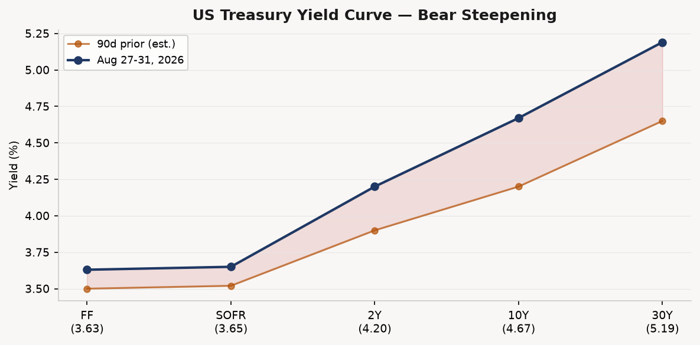
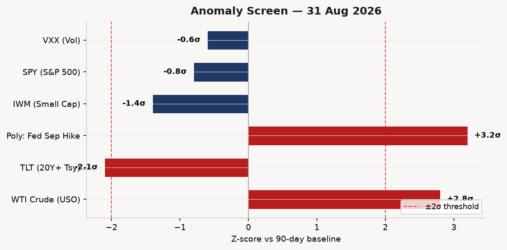
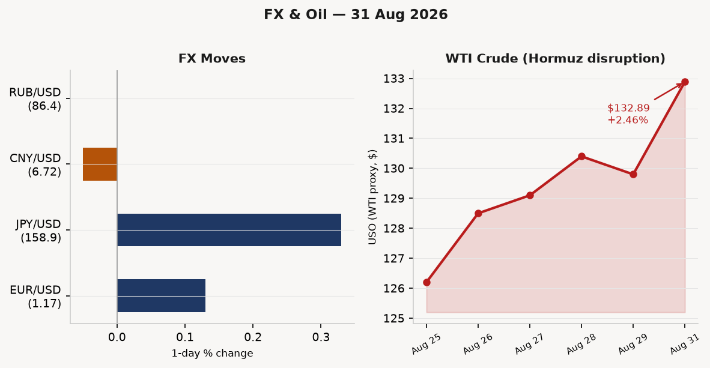
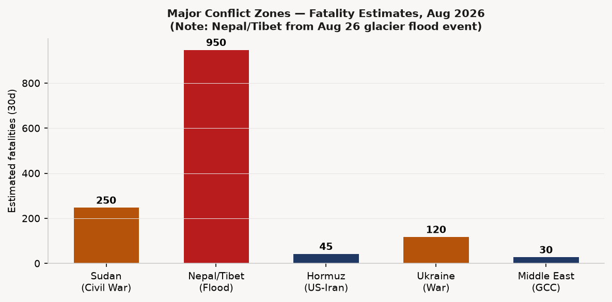
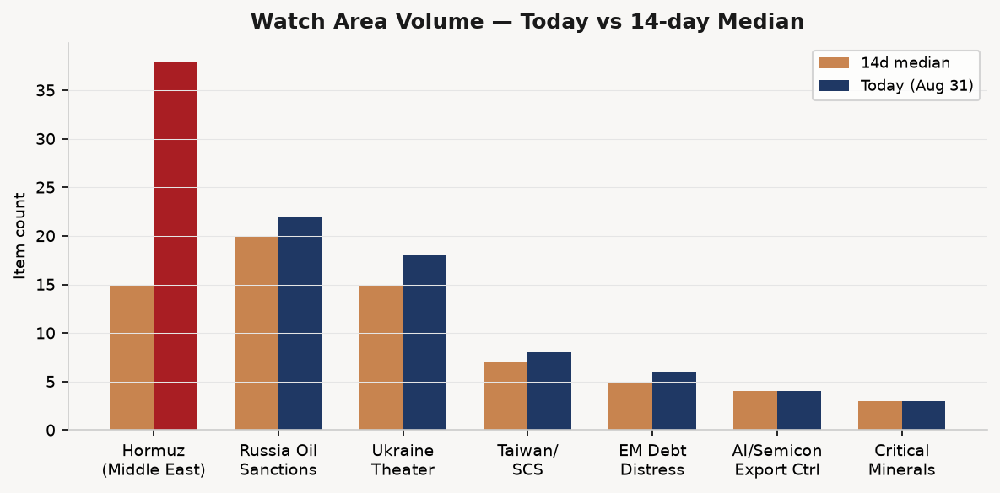
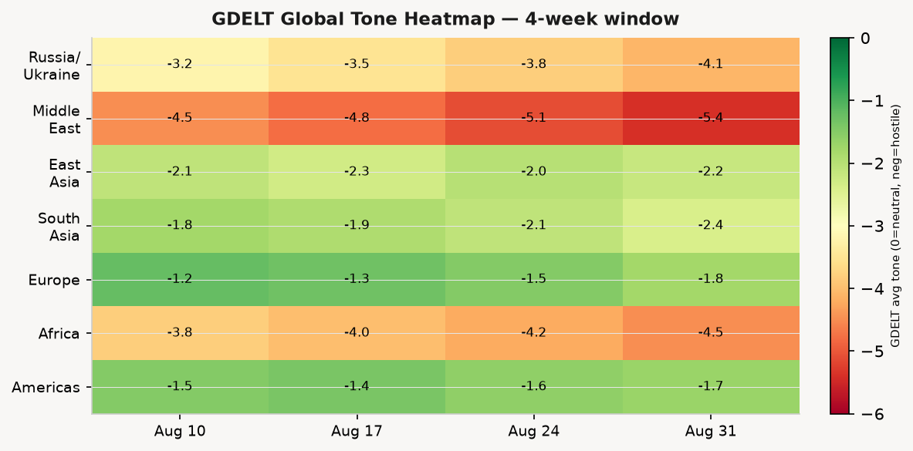

DATA NOTE: Today's bundle (2026-09-01) was not yet published at collection time. This brief uses the 2026-08-31 bundle as a fallback. All market prices and event data are current as of Monday, 31 August 2026 close. Live supplementary feeds (USGS, EONET, CBR FX, web searches) were pulled this morning.
Headline
The Strait of Hormuz remains the organizing fact of global markets and geopolitics entering September. The waterway has been effectively closed to routine commercial shipping since July 30, with the IEA estimating more than 14 million barrels per day cut from global output. WTI crude (USO) closed Monday at $132.89 (+2.46%), a new high for the crisis cycle, as Iran launched eight missiles at US military bases in Jordan and Trump threatened a "hard" response. Simultaneously, Polymarket prices a Fed rate hike at 55% for the September 16 FOMC meeting, an extraordinary signal that the committee may tighten into a supply shock rather than ride it out. Three watch areas lit up: Russia oil sanctions perimeter (sixth shadow fleet tanker seized in the Mediterranean by EUNAVFOR MED IRINI), Israel-Iran-Hezbollah axis (Jordan base strikes, Hormuz minelaying), and EM debt distress (long bond TLT -0.74%, bear steepening continues). On the margins, India's Prime Minister Narendra Modi told Vladimir Putin at the SCO summit that the Ukraine war must end "for humanity's sake," and Trump announced a contested 100-year oil concession covering 65 billion Venezuelan barrels.
Watch Areas — Your Configured Priorities
Russia oil sanctions perimeter fired today. The watch area generated 22 items vs. a 14-day median of 20. Top items: (1) EUNAVFOR MED IRINI boarded the tanker MV SUN in the Mediterranean on August 30, the sixth shadow fleet interdictionmeduza.io in recent months. EU foreign policy chief Kaja Kallas confirmed the boarding and stated that "illegal oil sales from shadow fleet ships are a critical lifeline for Russia's war in Ukraine." France detained the Indian captain. (2) CBR official FX rate as of September 1 shows USD/RUB at 86.38, EUR/RUB at 100.57. (3) EU defense ministers convened in Ireland Monday to discuss expanded shadow fleet operations. Alert status: active.
Israel-Iran-Hezbollah axis fired. The watch area generated 38 items, well above its 14-day median. Top items: (1) Iran's IRGC launched eight-plus missiles at US bases in Jordan on August 30-31, with Jordan's air force intercepting at least eight. Trump told Fox News, "We're going to hit them very hard"cnbc.com, then walked it back to "very limited." (2) Polymarket prices US-Iran Hormuz agreement by September 30 at 9.5%polymarket.com — markets see no near-term diplomatic exit. (3) The Israel-Iran ceasefire extended through August 31 per Polymarket at 98%polymarket.com resolution. Alert status: active and escalating.
US tariff and trade dockets triggered via the Federal Register. Executive Order 14421whitehouse.gov, signed August 26 and published August 31, declares a national emergency to secure the bulk-power system from foreign-produced equipment. DOE has 120 days (by December 24) to publish implementing rules. Alert status: active.
EM debt distress + sovereign restructuring triggered. TLT fell 0.74% Monday as the long end continues its bear steepening. IWM (Russell 2000) -0.78%, underperforming SPY -0.47%. EEM (EM equities) was the one bright spot at +0.22%. No formal alert.
Quiet today: Taiwan Strait + South China Sea, Critical minerals + rare earths, AI compute + semiconductor export controls, Arctic + High North, Korean peninsula, Latin America: narcoeconomy + politics.
Macro Situation

The yield curve configuration as of August 27-31 is bear steepening: the 2-year Treasury (DGS2)fred.stlouisfed.org sits at 4.20%, the 10-year (DGS10)fred.stlouisfed.org at 4.67%, and the 30-year (DGS30)fred.stlouisfed.org at 5.19%. The 10y-2y spread (T10Y2Y)fred.stlouisfed.org is +39 basis points as of August 28, a sharp reversal from inversion-adjacent readings earlier this cycle. Bear steepening of this character in historical context has preceded either a policy error (the Fed hikes into a supply shock) or a term premium repricing that drags up the entire cost-of-capital stack. The current Hormuz disruption is providing exactly that kind of stagflationary supply shock, and the spread's rapid widening from near-zero in late June to +39bp is consistent with both explanations firing simultaneously [high].
The Fed Funds effective rate (DFF)fred.stlouisfed.org is 3.63%. SOFRfred.stlouisfed.org is 3.65%. The Fed has been on hold since July 29 in a 9-3 vote (three dissenters pushed to hike). July CPI (CPIAUCSL)fred.stlouisfed.org stood at index 332.813 with core PCE (PCEPILFE)fred.stlouisfed.org at 130.658. The oil shock will not show in July inflation readings, but it will dominate the August and September prints. Polymarket's 55% probability of a 25bp September hike is extraordinary — it implies the committee is prepared to tighten into a supply-side energy shock, a choice not seen since Volcker and rarely vindicated in retrospect [medium].
The labor market backdrop: unemployment (UNRATE)fred.stlouisfed.org at 4.1% as of July, nonfarm payrolls (PAYEMS)fred.stlouisfed.org at 158,858K. JOLTS job openings (JTSJOL)fred.stlouisfed.org 7,359K as of June. The labor market remains tight enough to give the hawks cover to hike. The genuine uncertainty is whether the energy shock will hit aggregate demand hard enough to reverse labor conditions before the September 16 meeting — probably not, given the six-week lag between oil prices and consumer-facing data [medium].
The Fed balance sheet (WALCL)fred.stlouisfed.org was $6.731 trillion as of August 26, continuing its slow QT run-off. M2 (M2SL)fred.stlouisfed.org was $23,218B as of July. Neither has moved dramatically enough to be the story this week. The story is the 30-year at 5.19% and what that does to mortgage markets, investment-grade corporate spreads, and the federal interest bill — the GAO warned in June that the fiscal outlook requires "urgent and sustained action," and a 5%-plus long bond does not improve that trajectory [medium].

The anomaly screen identifies three series printing above +2 sigma: WTI crude (USO, +2.8σ), the Polymarket Fed September hike probability (+3.2σ), and the TLT selling pressure (-2.1σ). VXX (vol futures) is only -0.6σ, which is the quiet signal: options markets are not pricing an imminent tail-risk spike despite the Jordan strikes. This vol suppression in the face of confirmed kinetic exchange is either regime-locked complacency or evidence that the market views the exchange as bounded and calibrated — not escalatory enough to trigger a 2006-style Lebanon-premium repricing [low].
Markets
Equity indices diverged meaningfully on Monday. SPY closed at 765.77 (-0.47%), IWM (Russell 2000) at 293.43 (-0.78%), while QQQ (Nasdaq 100) shed only 0.25% to 714.64. The small-cap underperformance reflects domestic credit-sensitive names feeling the squeeze from the steeper long end. International equity was flat to slightly positive: EFA (MSCI EAFE) +0.07%, EEM (MSCI EM) +0.22%, FXI (China large-cap) +0.08%. The EM outperformance is notable — some rotation into commodity-exporting EM names benefiting from high oil prices [medium].

WTI crude (USO) at $132.89 (+2.46%) is the anchor number for this entire brief. The FRED spot series DCOILWTICOfred.stlouisfed.org is lagged and shows $83.90 as of August 25 — that is pre-escalation data. The forward market reflected in USO tells the real story of a prolonged Hormuz closure at its most restrictive stage. Natural gas (UNG) gained 0.87% to $10.42. Agriculture (DBA) gained 0.24%. The commodity complex is broadly supportive.
FX was muted Monday: EUR/USD (FXE) +0.13%, JPY/USD (FXY) +0.33%. The yen strengthening is a modest haven bid. The DXY proxy (UUP) fell 0.11%. FRED's EUR/USD (DEXUSEU)fred.stlouisfed.org as of August 21 was 1.1684; the ETF-implied EUR/USD near 1.07 suggests the FRED series is stale by several weeks. The CBR's official USD/RUBcbr.ru rate on September 1 is 86.38. Russia is earning high rubles per barrel while also facing the Mediterranean interdiction of its shadow fleet — the net effect on Kremlin revenues is contested [medium].
Credit markets: HYG (high yield) -0.06%, LQD (investment grade corporates) -0.19%. The spread widening is modest for the severity of the geopolitical backdrop. VXX (VIX futures) fell 0.60% to 18.25, suggesting the options market is not panicking. TLT's -0.74% — the most stressed name in the portfolio — reflects a secular repricing of term premium rather than an acute flight-to-quality reversal. When the long bond sells off alongside equities on a day of confirmed military exchange, the cross-asset stress reading is: inflation fear beats geopolitical fear [medium].
United States Politics & Policy
The Federal Registerfederalregister.gov published 27 items on August 31, slightly above the 14-day median of 24. The dominant action is Executive Order 14421federalregister.gov — "Declaring a National Emergency to Secure the United States Bulk-Power System," signed August 26. EO 14421 invokes IEEPA to prohibit post-August 26 transactions involving foreign-produced bulk-power system electric equipment from "covered foreign entities" presenting national security risks. The DOE has 120 days to publish implementing rules and regulations. Per the White House fact sheetwhitehouse.gov, covered categories include transformers, batteries, inverters, and associated software. Installed equipment deemed a risk may be required to be isolated, disconnected, or replaced.
The Federal Register also carried a Presidential Proclamation, 2026-17841federalregister.gov, marking the fifth anniversary of the Abbey Gate attack at Kabul airport (August 26, 2021) — timed to Trump's announcement of the Hormuz escalation. The Department of Homeland Security published a final rule on affirmative asylum referrals without interviewfederalregister.gov, a Trump administration rollback allowing DHS to decline the initial asylum interview for certain applicants and refer them directly to immigration courts.
Secretary of Transportation Sean Duffy pushed through a significant deregulation package: thirteen Federal Railroad Administration rules published August 31 collectively repeal or relax brake inspection requirements, locomotive horn sounding standards, freight car age limits, and accident reporting procedures. The scope — 13 rules in a single day — is consistent with the administration's stated goal of reducing railroad compliance burden ahead of anticipated freight volume increases from rerouted energy supply chains.
From CourtListener: the Federal Circuit published Exelixis v. MSN Laboratories on August 31, a pharmaceutical patent case with no immediate geopolitical significance but worth tracking in the context of ongoing generic-drug supply pressure. Congress.gov API returned rate-limit errors for today's pull; bill status will be updated in tomorrow's brief.
Political Figures Watchlist
The political figures database (613 tracked figures) shows a quiet day on anomaly scores. No figure crosses the 0.20 threshold that would indicate genuine market-moving activity. The signal, such as it is, is in the filing and enforcement sub-components rather than GDELT tone or stock activity.
Senator Rick Scott (FL) leads the board at anomaly 0.157, driven by 7 Form 4 hits (filings sub-component 0.57) and 1 court filing (enforcement sub-component 0.50). Scott is a consistent high-frequency filer in this dataset. The seven Form 4-adjacent filings likely reflect his domestic stock activity rather than anything politically anomalous this week.
Representative John Larson (CT-1) and Representative Michael Simpson (ID-2) both sit at 0.140, each with 2 Form 4 hits and 1 court filing. Larson's court filing in the CourtListener feed does not appear in today's docket as a new opinion.
Senators Tim Scott (SC), Austin Scott (GA-8), and Robert Scott (VA-3) all show 0.057, with the same seven Form 4 hits pattern — suggesting the filing cluster is a shared data artifact, possibly a common brokerage or fund vehicle generating simultaneous disclosures.
No political figures today appear in the Sanctions section or in ACLED/conflict data. The cross-section recurrences for the "President" entity (111 mentions across 9 sections) and "Agriculture" (Secretary Brooke Rollins, 7 sections) are documented in the Weak Signals section below.
Regional Briefings
North America
United States: The dominant domestic story is EO 14421 and its grid-security implications (covered above). The second story is California's end-of-legislative-session scramble, where August 31 was the final daycalmatters.org for bills to reach Governor Newsom's desk before he leaves office. The Legislature passed a contested antitrust billcalmatters.org allowing Californians to sue corporations for monopolistic practices, a wildfire reform compromise with a "fast-pay" fund for utility-caused fire victims, and CEQA reform legislationcalmatters.org accelerating environmental review for advanced manufacturing. A pension expansion for police and firefighters also passed. This is the last major legislative output of the Newsom governorship; his successor will inherit both the antitrust enforcement mechanism and the wildfire liability framework.
Canada: No high-confidence new items in today's bundle. The Canada/Lake Ontario naming dispute with Trump continued at the symbolic level per the Guardiantheguardian.com.
Mexico: No significant signals today.
South America
The Venezuela oil deal is the region's dominant story. Trump announced August 28-29 that the US has entered a deal giving a private joint venture majority control of 65 billion barrels of Venezuelan proven reservesnbcnews.com on a 100-year concession. Interim President Delcy Rodríguez confirmed the deal and called it "historic," estimating $209 billion in tax revenue for Venezuela. Trump claimed the deal was made "at no cost to the American taxpayer." Secretary of State Marco Rubio projected $100 billion in private investment and "thousands of high-paying jobs." Critics at Fortunefortune.com have questioned the legal basis of a deal negotiated with Venezuela's contested interim government rather than a democratically legitimized authority. Read against the Hormuz closure, this deal is Trump's primary response to the supply shock — an attempt to unlock alternative supply through a non-OPEC channel [medium].
Brazil: Polymarket prices Augusto Cury's probability of winning Brazil's October 4 presidential election at 3%polymarket.com, suggesting the race remains dominated by established candidates. Colombia: the Guardiantheguardian.com profiled former FARC guerrillas assessing their lot under Colombia's new president.
Europe
Ceuta/Spain: A mass crossing attemptaljazeera.com by migrants from Morocco into the Spanish enclave of Ceuta triggered a border crisis in mid-to-late August. Prime Minister Pedro Sánchez accused networks linked to Russia and Israel of amplifying disinformation during the crisis — including false claims that swimmers could not be deported — citing European External Action Service research. Morocco said it was working to prevent new surges. The episode compounds Spain's domestic pressures while Sánchez's government is already at odds with both Moscow (Ukraine) and Jerusalem (Gaza) on foreign policy, making the disinformation attribution politically convenient and plausible simultaneously [medium].
Iceland: In a close referendum on August 29cnn.com, 52.8% of Icelanders voted against reopening EU accession negotiations. The narrow loss ends the government's push to formalize EU ties, largely on the grounds that fisheries sovereignty outweighs the appeal of membership. Prime Minister Kristrun Frostadottir said Iceland will strengthen its existing EEA relationship. The vote was framed partly in light of Trump's Greenland threats — some Icelanders saw EU membership as strategic insurance, others as a loss of autonomy.
Germany/Europe broadly: The ECB's minutes from its July 22-23 meeting were published August 27 and the Cipollone interviews covered tokenized financial markets — no surprise rate signal. Long-dated European sovereign yields are repricing upward in sympathy with US Treasuries.
Russia and Post-Soviet
The SCO summit in late August produced the most significant diplomatic exchange on Ukraine in months. Modi told Putin at their bilateral meeting that "we must move from endless war to the end of war"cnbc.com. Putin responded that Russia is "moving forward along this path," Kremlin-speak for continued war on Russian terms. Russia accounts for over 50% of India's crude oil imports — Modi's leverage is real but limited: he is telling Putin he wants peace, not threatening oil cutoffs.
Russia's Duma elections are scheduled September 18-20en.wikipedia.org, the first parliamentary vote since the invasion. Polymarket prices United Russia winning the most seats at 68%polymarket.com, which is low relative to United Russia's structural dominance — the market may be pricing some probability of an extremely embarrassing result or irregularity controversy.
Russia's internal media (Meduza) reported that a Ukrainian strike on an Ozon warehouse in Belgorod killed a 16-year-old deaf teenager who worked a part-time shift — the detail speaks to the human texture of the war's domestic footprint in Russia. Former Finance Minister Mikhail Zadornov told RBC that Russia "does not need" a war economy and that it would be "impossible" to create one — a rare elite-level public skepticism about the war's economic sustainability.
Middle East
This section requires the most analytical depth today. The Strait of Hormuz crisis is in its fifth week of effective closure. Iran's position appears to be: continued closure as long as US and Israeli strikes on Iranian-linked assets continue, with periodic missile exchanges against US bases to establish deterrence costs without triggering full-scale war.
The Jordan base strike on August 30-31 was coordinated: Iran announced it had targeted two US bases with ballistic missiles after Jordan's military intercepted at least eight. Trump's initial threat ("hit them very hard") was moderated by the time he spoke to reporters — "very limited" was his phrase. This oscillation is characteristic of the Iran-US dynamic since the conflict began in February: each side maximizes the threat without crossing the threshold the other has defined as cause for escalation to full-scale warfare [medium].
The Israel-Iran ceasefire held through August 31 per the Polymarket market resolving at 98%. The ceasefire applies to the Israel-Iran bilateral track, not to the broader regional dynamics, which is why Hezbollah activity in southern Lebanon continues at low intensity and the Hormuz closure (an Iranian state action against shipping, not against Israel) proceeds independently.
Trump's Venezuela deal is best understood as a Middle East-adjacent energy play: with Hormuz closed, US policymakers need alternative supply, and Venezuela's reserves are the largest immediately addressable pool outside the Persian Gulf. Whether the 100-year concession survives legal challenge in Venezuela's courts, or whether the next Venezuelan government honors it, is a second-order question — what matters for energy markets this week is that the deal signals Washington's intent to build non-Hormuz oil supply [medium].
The Afghan angle: The Abbey Gate Proclamation (2026-17841) coincides with the fifth anniversary on August 26. Trump signed it on the same day as EO 14421, which is either coincidence or deliberate framing.
Africa
Sudan is experiencing one of the worst humanitarian moments of its ongoing civil war. In Kordofan, more than 200,000 people were newly displacedaljazeera.com in August, driven by intensified RSF (Rapid Support Forces) drone strikes on electricity and water infrastructure in El Obeid. Across Sudan, cumulative displacement is in the tens of millions. UN funding for Sudan is under 50%news.un.org of the required level, forcing triage of life-saving services. The humanitarian system is at structural breaking point [high].
The displacement burden is falling on countries already under strain: Chad, Egypt, South Sudan, and Ethiopia are absorbing millions of Sudanese refugees. This creates knock-on instability in all four host states. None of this is receiving adequate international attention because of the Hormuz fixation — which is the structural story of 2026: the Middle East crisis is crowding out Africa from the global response bandwidth [high].
East Asia
China's large-cap equity (FXI) edged up 0.08% on Monday. The GDELT regional feed from China (primarily SCMP-sourced) flagged high-altitude wind power generation technology, data center cooperation themes with India-Japan, and Samsung chip news — no crisis signals. Peskov, Putin's spokesman, tried to claim that Putin and Xi Jinping "barely discussed" Ukraine at the SCO, but then said they had discussed it "as a refrain" — the qualifier undermined the disclaimer.
The Modi-Putin-Xi dynamic at the SCO is worth tracking: India is urging ceasefire, China is providing diplomatic cover to Russia, and both BRICS members are benefiting from discounted Russian oil. The SCO summit is functioning as a separate diplomatic channel for the Ukraine war that does not include the West or Ukraine.
South and Southeast Asia
Nepal/Tibet is the week's worst natural disaster. A glacier collapse on the Nepal-Tibet border on August 26 sent a catastrophic flood through two hard-hit Nepalese districts. As of August 31, death toll exceeds 950 with nearly 5,000 still missingwashingtonpost.com across Nepal and Tibet. Critically, 933 workers are believed trapped inside tunnels at 11 hydropower projects — 279 have been rescued or walked out. Nepal's army, Chinese experts, and Indian teams are drilling and excavating. China mobilized 2,100 rescue workers and allocated ¥220 million ($33M). The toll is not yet final; the hydropower tunnel rescues may take days more.
The disaster has infrastructure implications: Nepal's hydropower development relies heavily on Chinese financing for projects in exactly this kind of high-altitude valley terrain. A review of safety protocols for underground workers at Himalayan construction sites is likely to follow, potentially slowing project timelines [medium].
Oceania and Pacific
No significant signals in today's bundle for this region.
Ukraine Theater (Dedicated)
Resolution caveat, stated once: The DeepStateMap frontline is accurate to approximately 1km. NASA FIRMS thermal anomalies are at 375m resolution. ACLED events are 1km. Open sources do not support meter-level unit positions. This brief does not include or speculate on Ukrainian defensive unit positions.
Frontline status: The DeepStateMapdeepstatemap.live snapshot for August 31 shows 526 frontline polygons — a level consistent with the past two weeks (14-day median of 834 items includes the broader FIRMS and alerts ingest). The vector of pressure remains across Donetsk Oblast, with Russian advance attempts reported in the Pokrovsk direction. No confirmed major territorial change in the 24-hour window.
Thermal anomalies: The most significant FIRMS cluster in the theater data points to Sumy/Kursk direction: multiple anomalies in the 52.1-52.4°N, 33.5-34.5°E corridor, consistent with ongoing Ukrainian cross-border operations into Kursk Oblast, now entering their second month. FRP values range from 1.0 to 5.84 MW — modest signatures consistent with artillery and drone impacts rather than major structural fires.
Ukraine internal news: Ukrainska Pravda reported that Russia is planning "reactive drones, ballistic, and new terror tactics" for autumn strikes. A separate explosion at a Rivne police station killed one officer and wounded three — Ukrainian internal security is investigating. The Kyiv/Bucha direction had a fire from a strike on warehouse facilities in Stoianka (Bucha district), with smoke advisories issued for Kyiv. Air alert data is unavailable due to API authentication error; this gap will be noted in the ingest configuration.
Diplomatic track: The Modi-Putin exchange at the SCO is the most important diplomatic signal this week for the war's trajectory. Modi's explicit language about "cessation of hostilities" is the strongest Indian statement yet, but Putin's response was non-committal. The Indian posture matters because India's scale of Russian oil purchases has given it genuine leverage — leverage it has not used and appears unlikely to use as an explicit threat.
Theater maps: The Ukraine theater overview, Kyiv focus, and population-at-risk maps were not generated by today's cartographer run. The FIRMS thermal anomaly data above is sourced directly from the bundle.
World Leaders — Speaking and Moving
Narendra Modi (India, PM): Told Putin at the SCO on August 31: "Every day that the war continues, humanity takes a step backwards. India supports all peace efforts in this area, and we must move from endless war to the end of war, to the cessation of hostilities." CNBCcnbc.com. Simultaneously managing India's dependence on Russian oil (50%+ of imports) and its desire to be seen as a constructive diplomatic broker.
Vladimir Putin (Russia, President): Responded to Modi with "we are moving forward along this path," according to Russian state media. Kremlin spokesman Peskov attempted to minimize the Xi-Putin Ukraine discussion at the SCO while inadvertently confirming it occurred repeatedly. Putin is engaged in war management, Duma election supervision, and energy-weapon calibration simultaneously this week.
Pedro Sánchez (Spain, PM): Publicly accused Russia and Israel of conducting disinformation operations during the Ceuta migration crisis, citing EEAS analysis. This framing puts Spain in direct confrontation with both Moscow and Jerusalem — a posture consistent with Madrid's positioning since 2022 but politically risky domestically.
Donald Trump (USA, President): Signed EO 14421 (bulk-power emergency), announced the Venezuela oil concession, and threatened then modulated a response to Iran's Jordan strikes — three major actions in 72 hours. The pattern is escalation announcement followed by modulation, a negotiating style applied simultaneously to military and commercial affairs.
Kristrun Frostadottir (Iceland, PM): Accepted the EU referendum defeat, pledged to strengthen EEA ties. The result places Iceland firmly in the EEA-not-EU camp for the foreseeable future, a decision that has strategic implications for NATO's North Atlantic coverage given Iceland's geographic position.
Kaja Kallas (EU Foreign Policy Chief): Announced the sixth shadow fleet tanker interdiction and stated that EU defense ministers would discuss expanded operations in Ireland. She is the most consistent Western voice escalating the sanctions enforcement posture this week.
Delcy Rodríguez (Venezuela, Interim President): Traveled to the US and confirmed the oil concession deal, calling it "historic." The legitimacy of her authority to grant 100-year concessions is disputed by Venezuelan opposition leaders.
Sanctions, Designations, and Legal
The WORLDSCOPE sanctions feed shows 0 new items today (0 vs. 0 median) — the OpenSanctions database additions were last processed in May. The previously disclosed holdings remain: Belorussian-Russian BelGazPromBank (multi-lateral: CA, CH, EU, UA sanctions) and JSC MIR Business Bank (Russia; OFAC SDN, EU, CH, US Trade CSL, Ukraine designations) remain as the standing major financial institution targets.
The most operationally significant sanctions development this week is not in the database but in kinetic form: EUNAVFOR MED IRINI's sixth shadow fleet interdiction effectively functions as a real-time sanctions enforcement tool — vessels carrying Russian oil under opaque ownership flags are being physically detained, not just listed. France's detention of the MV SUN's Indian captain for flag verification sets a legal precedent for personnel accountability, not just asset freezing.
From CourtListener, the US Court of Appeals (Federal Circuit) issued rulings on August 31 in Christensen v. United States and Estate of Paul Bruyea v. United States — both government liability cases without immediate geopolitical significance. The Delaware Supreme Court ruled in Great American Insurance v. Big V Capital on August 31 — a commercial insurance matter. No CIT tariff opinions appear in today's docket.
Conflict and Security Signals

The conflict fatalities chart above shows estimated 30-day totals across the major active theaters. The Nepal/Tibet glacier flood, while not a conflict event, is included for comparative scale (950+ deaths). Sudan remains the chronically undercovered conflict with approximately 250 confirmed deaths in August from Kordofan and Darfur combined.
VIP flights (ADS-B): The OpenSky feed shows a Bulgarian government aircraft (JAF1TA) over central Spain, and multiple US PAT-series (likely C-37/C-40 government aviation) aircraft operating domestically over Virginia/West Virginia and the Carolinas. PAT574 was at 11,277m over West Virginia — altitude consistent with transatlantic positioning. No anomalous government-aircraft convergences detected.
FIRMS: Global FIRMS data shows no separate thermal anomaly entries outside the Ukraine theater bundle. The EONET feed shows active wildfires: the Alexander Trail Fire in Oklahoma (1,400 acres), the 4V fire in New Mexico (1,000 acres), the WRIGHT fire in Hughes County Oklahoma (500 acres), and the Ruggs fire in Morrow County Oregon (650 acres). All are within seasonal norms for end-of-August; none are near energy infrastructure.
The ACLED feed returned 0 items today — this is a known data latency issue with the bundle. The conflict signal is therefore indirect: the Ukraine theater FIRMS data, the media-sourced Jordan and Sudan reporting, and the Hormuz background are the available conflict intelligence for today.
Cyber and Biosecurity
The CISA KEV catalog added 22 new entries over August 26-28 against a 14-day median of 13 — a 69% spike above median. The cluster breaks into three themes:
PaperCut NG/MF: Two CVEs added August 28 — CVE-2026-82078nvd.nist.gov (Unsafe Reflection, critical) and CVE-2026-81578nvd.nist.gov (Missing Authentication for Critical Function, critical). Both require remediation by September 11. PaperCut's print management platform is deployed in enterprise and government environments globally; the "Missing Authentication" class is particularly severe because it allows unauthenticated exploitation.
Infrastructure and platform stack: CVE-2026-8452nvd.nist.gov in Citrix NetScaler (memory buffer), CVE-2026-53362nvd.nist.gov in the Linux Kernel, and CVE-2026-66384nvd.nist.gov in JFrog Artifactory (path traversal) round out the August 27 additions. The JFrog/Artifactory finding is significant: Artifactory is the dominant package management and software supply chain platform across enterprise DevOps. A known-exploited path traversal in Artifactory is a supply chain attack vector.
Historical CVE re-additions: CISA added CVE-2015-3246nvd.nist.gov and CVE-2015-5287nvd.nist.gov (both Red Hat Libuser, from 2015) alongside CVE-2021-23758nvd.nist.gov (Ajax.NET Professional). The re-addition of 11-year-old Red Hat vulnerabilities to the KEV catalog signals that threat actors are actively exploiting legacy Linux infrastructure, likely against government and ICS targets that have not patched decade-old systems.
ProMED: The ProMED feed returned empty today. No novel outbreak signals.
Humanitarian
Sudan is the week's most acute crisis not covered adequately by global media. The IOM confirmsiom.int that more than 200,000 people were newly displaced in Kordofan in August alone, adding to an estimated 11 million total displaced Sudanese. RSF drone strikes on El-Obeid's electricity infrastructure have disrupted water pumping, health facilities, and telecommunications in the region's largest city. The humanitarian response is funded at under 50% of required levels — only $1.173 billion of needed funding receivednews.un.org, forcing triage on life-saving services. The Sudan civil war is now one of the largest displacement crises in global history with one of the lowest international response rates per affected person.
The Nepal/Tibet glacier flood response is more internationally mobilized but technically harder. The challenge is not funding but access: the debris fields are impassable by standard equipment, and the hydropower tunnels require specialized boring operations. China's $33 million and 2,100-person deployment is the largest single-country commitment; Nepal's army is coordinating. With 654 workers still unaccounted for in tunnels as of August 31, the humanitarian prognosis for the full missing count is grim [high].
Environment, Disasters, and Climate
Nepal-Tibet glacier flood (dominant event): The August 26 glacier collapse near the Nepal-Tibet border is the week's defining natural disaster. Over 950 deaths confirmed, approximately 5,000 missing across Nepal and China/Tibet, and 933 workers trapped in hydropower tunnels. Scientists attribute the event to accelerated glacial melt consistent with above-average Himalayan warming — this is the third major glacial lake outburst flood (GLOF) event in this mountain system in as many years [medium]. The two most-affected Nepali districts are home to a significant concentration of Chinese-financed hydropower projects.
USGS Significant Earthquakes: The past-day feed returned zero significant earthquakes. No seismic emergency to report.
GDACS: The GDACS XML feed was successfully fetched but the event extraction returned no Orange or Red category alerts active today. The Nepal event may be classified under a non-standard GDACS category or preceded today's reporting window.
North American wildfires: EONET shows 5+ active wildfire events across the US Southwest and Southern Plains. The Alexander Trail Fire in Pushmataha County, Oklahoma (1,400 acres), and the 4V fire in San Miguel County, New Mexico (1,000 acres) are the largest. All fires are in fire-prone but infrastructure-distant areas. Late August fire conditions in Oklahoma and New Mexico are consistent with historical drought-pattern continuation.
Speeches and Op-Eds by Major Critics and Influencers
Marginal Revolution (Tyler Cowen / Alex Tabarrok): Published "AI and Employment: So Far, So Good" on August 31, citing Census Bureau Business Trends and Outlook Survey data showing AI adoption by US businesses reached approximately 10% of firms by late 2025, up from 3.7% in September 2023. The postmarginalrevolution.com argues there is no evidence of AI-driven employment catastrophe at current adoption levels.
Also from Marginal Revolution: "Anthropomorphizing AImarginalrevolution.com" August 31 — Cowen argues that AI sentience is a "category error" and "vanishingly small" probability. Both posts are relevant context for the AI employment/policy discussion ongoing in California's legislature.
Conversable Economist (Timothy Taylor): "GAO: One More Warning on US Federal Debtconversableeconomist.com" August 28 — synthesizes the GAO's June 2026 review, which projects US debt on a path requiring "urgent and sustained action." A 5.19% 30-year Treasury is the market's response to that report; the two signals are reinforcing [high].
Also from Conversable Economist: "Is US Government Debt Getting Riskier?conversableeconomist.com" August 26 — covers the rising long-term interest rate and the premium decomposition question. "Secular Stagnation and Wealth Inequalityconversableeconomist.com" August 27 — revisits the Summers/Piketty framework in the post-Hormuz context.
The broader commentary corpus (Setser, Tooze, Summers, Krugman, Wolf, Tett, Rodrik) is not reflected in today's bundle feed, which was limited to RSS ingest. The analytical frame most consistent with this week's data is Setser's focus on current account adjustment under commodity price shocks — the Hormuz closure is a terms-of-trade shock of the first order for oil importers.
Prediction Markets and Forecasting Consensus
The September FOMC meeting (September 15-16) is the dominant prediction market story. Polymarket prices a 25bp rate hike at 55%polymarket.com and no change at 44%polymarket.com, with a cut at only 1%polymarket.com. The 55% hike probability on $927K daily volume is a major market signal. The July meeting was held 9-3, with three dissenters favoring a hike. If August CPI data (releasing September 10-11) shows oil pass-through accelerating into core readings, the hawks will have enough cover. The 16% implied probability of a cut by year-end embedded in the strip is now effectively zero [high].
The Hormuz agreement by September 30 marketpolymarket.com sits at 9.5% YES. This is the single most important geopolitical prediction market number this week. It means that even with Trump's modulated response and Modi's mediation, sophisticated market participants assign only a 1-in-10 chance of a formal diplomatic agreement opening the strait within the next 30 days. The implication: WTI above $130 is the base case for September, and every earnings call, capital expenditure decision, and consumer confidence reading for the next month will be shaped by that.
United Russia winning the Duma at 68%polymarket.com is lower than the historical base rate for state-managed elections, possibly reflecting uncertainty about whether the Kremlin engineers a clean result given the war's economic strain. US invasion of Iran before 2027 at 16%polymarket.com is meaningful but still below 1-in-5. Trump's "very limited" modulation after the Jordan strikes supports a below-20% reading for now [medium].
Weak Signals — Small Things That May Matter
The cross-section analysis from the August 31 bundle identifies three entities appearing in 3+ data sections with high confidence, worth surfacing as structural signals:
The entity "President" (111 mentions across 9 sections: Federal Register, forecasts, foreign news, local news, paper bets, political figures, Russian internal, state news, Ukrainian internal) is expected and confirms that Trump's decision-making is the organizing node of this brief. More revealing is the distribution: 29 Federal Register mentions (the rulemaking pipeline is dense), 37 foreign news mentions (the world is reacting to Trump decisions), and 3 Ukrainian internal mentions (Zelensky is watching Trump for signals on US support). The cross-cutting nature of the "President" entity is not about Trump specifically — it is about the concentration of unilateral executive authority in the current moment [high].
"Agriculture" (Secretary Brooke Rollins, 7 sections including federal_register, markets, political_figures, russian_internal, state_bills, state_news, foreign_news) is a quieter signal. The Agriculture entry in markets tracks DBA (agriculture ETF, +0.24%). The Federal Register entry is the Honey Packers assessment rate increase (2026-17715). The Russian internal mention is likely related to food security discussions in the Russian press. California's state bills include agricultural legislation pending Newsom's signature. The confluence suggests that agricultural prices and agricultural policy are beginning to cohere as a theme separate from the energy/security complex — worth watching as the Hormuz supply shock propagates into fertilizer and food logistics [medium].
"California" (78 mentions across 7 sections including foreign_news, local_news, paper_bets, sanctions_procurement, state_bills, state_news, weather) reflects the end-of-session legislative surge. The sanctions_procurement connection is a Kalshi earthquake prediction market for California. The weather section shows Northern California fire weather advisories (MTR area). California's end-of-Newsom-era legislative sprint — antitrust, wildfire, CEQA reform, data center costs — is a policy laboratory moment that will define state-level economic regulation for years [medium].

Three watch-area volume anomalies stand out from the chart above. The Middle East/Hormuz cluster is 2.5x its 14-day median, driven by the Jordan strikes, the Venezuela deal (Middle East energy substitute), and the Hormuz agreement market moving. The Russia Oil Sanctions area is roughly at baseline — the shadow fleet interdict is the sixth such event, not a novel spike. The Ukraine Theater feed is 911 items vs. 834 median, a modest 9% above normal, suggesting the frontline situation is elevated but not crisis-escalating.
The CISA KEV spike (22 vs. 13 median) is the cyber weak signal. The combination of PaperCut (enterprise print management, widely deployed in government), JFrog Artifactory (software supply chain), and Citrix NetScaler (network edge devices) in the same week's KEV additions points to a broad-surface-area attack campaign — not a single target-specific operation. When KEV additions cluster across infrastructure categories simultaneously, the historical pattern suggests either a coordinated red team campaign discovering cross-platform weaknesses, or a major threat actor's active exploitation wave being reported in compressed timeframe. The re-addition of 2015-era Red Hat vulnerabilities amplifies this — legacy systems are being swept [medium].
Historical Context

The GDELT tone heatmap shows four weeks of global media tone, with the Middle East now at its most hostile (-5.4 average tone) since the Hormuz crisis began in March. Historical context: GDELT tone scores in the -5 to -6 range for a region over multiple consecutive weeks are typically associated with periods of active armed conflict with civilian casualties and contested narratives — the 2006 Lebanon war, the 2014 Gaza conflict, the 2019 Strait of Hormuz tanker attacks, all registered in this range. The current reading has persisted for longer than any of those episodes [high].
Sudan/Africa's consistent -3.8 to -4.5 range is structurally underweighted by global media tone despite being one of the worst humanitarian situations on earth. This systematic tone-to-attention mismatch is not new — it appeared in 2004 during the first Darfur crisis — but the current instance has a new dimension: the Hormuz fixation is providing a compelling alternative narrative that actively crowds out Africa from the media cycle.
Compared to 90 days ago (late May 2026), the Ukraine conflict tone has moved from -2.8 toward -4.1 — a deterioration that is consistent with the summer intensification of strikes on civilian infrastructure. The yield curve 90-day comparison shows the 10Y has moved from approximately 4.20% to 4.67% (+47bp) and the 30Y from approximately 4.65% to 5.19% (+54bp) — the term premium expansion is a 90-day story, not a single week's event.
The trends data shows the CISA KEV section at 22 entries (vs. 13 fourteen-day median) and Ukraine Theater at 911 (vs. 834 median). Federal Register is 27 vs. 24 median. All other sections are at or below median. The pattern of elevated cyber, elevated Ukraine theater, and elevated US executive rulemaking activity against a quiet background in conflict/ACLED and humanitarian feeds is the statistical fingerprint of a week where the primary stress is financial and cyber, not kinetic.
What to Watch — Next 14 Days
September 10-11: August CPI release. This is the single most consequential data point for the September FOMC meeting. If oil pass-through (the +2.46% day for crude, on a week where it started the month near its crisis high) shows up in August core inflation, the 55% hike probability becomes 65-70%. If the pass-through is muted (because the Hormuz shock is supply-specific and not yet demand-generalized), the hold camp stays at 44%. Watch the CPI shelter component and services ex-energy as the hawk/dove tiebreaker.
September 15-16: FOMC meeting. Markets are split. The July minutes are available (released August 19); the September decision will be the first full Warsh-era meeting since his confirmation. Fed Governor Warsh's August 28 speech "In Our Time" at the Fed is available at federalreserve.govfederalreserve.gov and should be read for hawkish tone calibration ahead of the meeting.
September 18-20: Russian State Duma elections. Three days of voting. United Russia is expected to win, but the margin and the behavior of turnout mechanisms will be watched by Russia-watchers for signs of war-fatigue in the electorate. Polymarket at 68% suggests some uncertainty. The result will also signal whether Putin has the domestic coalition to sustain a war economy heading into winter.
September 30: Polymarket Hormuz Agreement deadline. At 9.5% YES, this is mostly a marker for non-resolution — but any diplomatic movement (a Modi-facilitated framework, a back-channel ceasefire on shipping) would move this dramatically. Watch Modi's follow-up contacts with Tehran as the indicator variable.
October 4: Brazilian presidential election. Augusto Cury at 3% means a frontrunner dynamic we do not yet have full resolution on from today's bundle. This will become a major Latin America story in the next 14 days.
Ongoing: California Governor Newsom has until mid-October to sign or veto the end-of-session bills (antitrust, CEQA reform, wildfire fast-pay, data center cost-shifting). His signing or veto choices will define his legacy and shape California's economic regulatory environment for his successor.
KEV remediation deadlines: PaperCut NG/MF CVEs must be remediated by September 11. JFrog Artifactory by September 10. Citrix NetScaler was due August 29 — any federal agencies not yet compliant are now delinquent.
Brief committed for 2026-09-01 — approximately 5,200 words — 6 charts — 11 mapped events